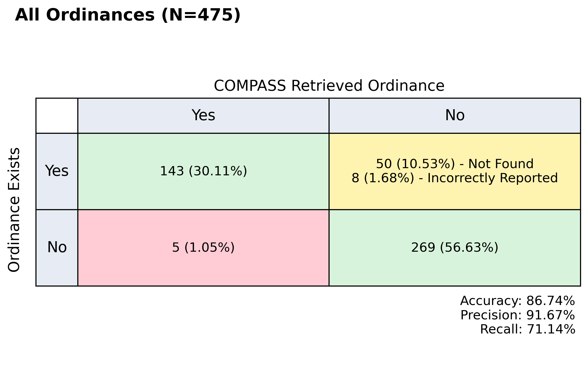

COMPASS Validation#
Here we give a brief overview of the results of known COMPASS validation efforts.
COMPASS validation is an ongoing effort, and we will update this page as new results become available.
Mini Wind Validation (June 2025)#
This validation was for the ordinance value extraction portion only (assume documents are correct and belong to the correct jurisdiction).
This validation effort is meant primarily as a sanity check and as a stepping stone to:
Perform a larger validation effort for solar ordinance values, and
Begin a CONUS-level COMPASS run for wind ordinance collection.
Warning
The number of documents examined is extremely small compared to the total number of jurisdictions. Interpret all results with extreme caution!
Info#
COMPASS Version: v0.5.0
Number of Documents: 19 (Assuming 6,000 jurisdictions, there is a 95% chance that the metrics are within ±22.45% of the reported value)
Features:
structures (participating)
structures (non-participating)
property line (participating)
property line (non-participating)
roads
railroads
transmission
water
noise
maximum height
maximum project size
minimum lot size
maximum lot size
shadow flicker
tower density
blade clearance
primary use districts
special use districts
accessory use districts
color
decommissioning
lighting
prohibitions
visual impact
ordinance effective year
Procedure Validated: Ordinance extraction from documents
LLM(s) used: OpenAI GPT-4o-mini
Results#
Wind Validation (January 2024)#
This validation was for the ordinance value extraction portion only (assume documents are correct and belong to the correct jurisdiction).
This is the original model validation, focusing on the model ability to extract structured ordinance data from unstructured wind ordinance text documents.
Info#
COMPASS Version: alpha
Number of Documents: 83 (Assuming 3,000 jurisdictions, there is a 95% chance that the metrics are within ±10.61% of the reported value)
Features:
structures setbac
property lines
roads
railroads
transmission
water
noise
maximum height
minimum lot size
shadow flicker
tower density
Procedure Validated: Ordinance extraction from documents
LLM(s) used: OpenAI GPT-4